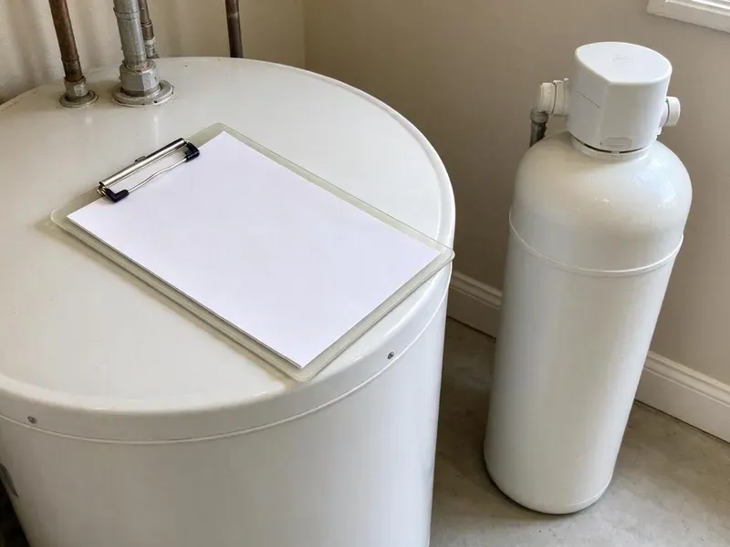

Drainage Services in Mount Vernon, NY
If you're dealing with drainage problems in Mount Vernon, NY, HCL Plumbing provides fast and effective solutions. Our team is ready to restore your system.
- Same-Day Drain Service
- Yard and Storm Drainage
- Quick Local Service
- Upfront Pricing
Reliable Drainage Solutions Are Here in Mount Vernon, NY.
We find out why water is backing up or pooling and give you a simple, written plan.
Expert Drainage Services for Mount Vernon, NY Residents
When you need effective drainage services in Mount Vernon, NY, look no further than HCL Plumbing. We understand the challenges New York homes face, like shifting soil and sudden heavy rains, and we offer durable solutions to keep your drains clear and functional. Much of New York sits on glacial till, rock and clay, which makes excavation for sewer and water lines slower and harder.
Our expertise includes:
- Storm Drain & French Drain Installation
- High-pressure hydro-jetting service
- Downspout tie-ins, dry wells and grading corrections around foundations

Additional Plumbing Maintenance Services in Mount Vernon, NY
Our maintenance and specialty plumbing services in Mount Vernon, NY protect your home year-round and extend the life of every system.


Customers
Why Choose HCL Plumbing for Drainage Services in Mount Vernon, NY?
Choosing HCL Plumbing means partnering with a team that prioritizes the longevity and efficiency of your drainage system. We use industry-best practices and high-quality parts to ensure lasting repairs and installations.
- Whole-Property View, We trace water from the roof and fixtures all the way to the street or a dry well.
- Storm Ready, Our yard drainage is sized for intense storms, not just light rain.
- Right Equipment, Cable machines, jetters, cameras and locators let us fix the cause instead of guessing.
Citywide Coverage
We make sure that no matter where you are in Mount Vernon, professional drainage services are just a phone call away. Our goal is to provide fast, effective solutions to all residents and businesses.
Experienced Team
The HCL Plumbing team brings years of hands-on experience to every drainage job, making sure your system is handled by professionals who know how to get the job done right the first time, safely and efficiently.
Safety-First Approach
We locate utilities through 811 before digging any trench and follow safe trenching practices on deep work. Drain connections and cleanouts are installed to the plumbing code used in your city or county.
Trusted Certified Mount Vernon Plumbing Services Professionals
At HCL Plumbing, we take pride in providing certified plumbing services throughout Mount Vernon, NY. Backed by leading industry credentials, our experienced plumbers combine technical skill with genuine customer care. Whether it is repair, installation, or maintenance, we follow strict safety and quality standards to deliver lasting results you can trust.
Call Us Now PHCC Plumbing Contractor Recognition
PHCC Plumbing Contractor Recognition Better Business Bureau (BBB) Accreditation
Better Business Bureau (BBB) Accreditation Angi Certified Pro
Angi Certified Pro ISO 9001 Quality Management Certification
ISO 9001 Quality Management CertificationDependable Drainage Services in Mount Vernon, NY
Commercial Drainage Services in Mount Vernon
Restaurants, retail centers and office buildings need floor drains, grease lines and parking lot drainage that keep working under heavy use. We jet grease-laden kitchen lines, clear floor drains and repair catch basins. Scheduled maintenance plans reduce emergency backups that close a business for the day. We can work after hours to avoid bothering customers.

Drainage Service Cost Comparison in Mount Vernon, NY
Clearing a single fixture drain typically costs $125 to $300, and a main line clearing runs $200 to $500. Hydro jetting a main line usually costs $400 to $900. Yard drainage costs vary more: a short French drain may run $1,500 to $4,000, while channel drains and dry wells range from $1,000 to $6,000 depending on size and soil. We provide a written estimate after reviewing your site.
Sewer Camera Inspection in Mount Vernon, NY
When you have recurring drain problems, a sewer camera inspection is the best next step. We insert a flexible, waterproof camera into your pipes to visually diagnose issues like cracks, breaks, root intrusion, or significant blockages. This no-dig method allows for precise problem identification, saving you time and money on unnecessary digging.
Kitchen, Bath and Laundry Drain Clearing in Mount Vernon
Slow sinks, gurgling tubs and overflowing laundry standpipes usually come from grease, hair, soap scum and mineral scale. Private wells serve a large share of rural homes, and they can carry iron, sulfur or hardness that stains fixtures and clogs filters. Hard water leaves calcium deposits that narrow pipes and catch debris faster than soft water does. We clear lines with the right size cable for each fixture and avoid harsh chemicals that damage pipes. If clogs keep coming back, we camera the line to find the reason.
Drainage System Maintenance in Mount Vernon
Regular maintenance is key to avoiding costly drainage problems. Our drainage system maintenance services in Mount Vernon include routine inspections, preventive drain cleaning, and recommendations for addressing potential issues before they escalate. Regular maintenance helps extend the lifespan of your plumbing system, reduce the risk of unexpected repairs, and ensure optimal performance year-round.
Storm Drain & French Drain Installation in Mount Vernon, NY
Sudden, heavy downpours make proper storm drainage essential. Nor'easters and tropical storm remnants can overwhelm municipal sewers, so backwater valves are a sensible addition for basement homes. We design and install effective storm drain and French drain systems in Mount Vernon, NY to divert excess water away from your foundation, preventing erosion and water damage. These systems are important for managing runoff on properties with poor grading or soil that swells when wet, protecting your home's structural integrity.
Outdoor & Storm Drain Cleaning in Mount Vernon
Outdoor drains, including storm drains and area drains, are essential for preventing water accumulation around your property, especially during heavy rainfall. We clear debris, leaves, and sediment from these systems to ensure proper water runoff and protect your foundation from potential water damage. Regular cleaning can prevent costly landscape and structural issues.

French Drain Installation in Mount Vernon
A French drain is a gravel-filled trench with perforated pipe that collects water and carries it away from problem areas. It works well along foundations, behind retaining walls and in low spots that hold water after heavy rain. We wrap the gravel in filter fabric so fine soil does not clog the system. The drain is sloped to an outlet, dry well or approved discharge point.
Drainage Services Near Me in Mount Vernon, NY
We are committed to being the go-to plumbing experts for all your drainage needs across Mount Vernon, NY. Our proximity allows us to respond quickly to emergencies and schedule routine services at your convenience, keeping your plumbing system in top condition.
Looking for dependable drainage services near me in Mount Vernon, NY? HCL Plumbing is your local expert, providing prompt and professional solutions for all your residential and commercial drainage needs. Our team is always ready to head to your location.
HCL Plumbing at a Glance
- Licensed and insured plumbers serving Mount Vernon, NY
- 24/7 emergency service with same-day scheduling
- Clear written estimates, no hidden fees
- 4.8-star rated by 520+ New York customers
Mount Vernon Map
Mount Vernon Information
- Population
- 71,168
- Area codes
- 914/845/347
- Service area
- Mount Vernon and communities within 40 miles
- Nearby
- New Rochelle, Yonkers, White Plains, Hempstead
Homes in Mount Vernon, NY deal with mineral scale in their drain lines and storm runoff that collects against the foundation, so proper drainage protects both the plumbing and the house. Private wells serve a large share of rural homes, and they can carry iron, sulfur or hardness that discolors fixtures and clogs filters.
Expert Services
Trust our professionals for reliable HCL Plumbing solutions in Mount Vernon, NY.
Our Specialized Plumbing Services in Mount Vernon, NY
At HCL Plumbing, we provide a complete range of plumbing services across Mount Vernon, NY. From leak detection to full system installations, our team ensures fast, precise, and affordable service for both residential and commercial properties. Explore our core services below:


How Our Drainage Services Process Works in Mount Vernon, NY
Our drainage services process is designed for efficiency, transparency, and limited disruption to your daily life. We follow a clear set of steps to ensure your drain problems are solved effectively.
Request a Quote
Call (716) 396-7101 and tell us whether the issue is an indoor drain or outdoor water. We schedule a visit and explain any diagnostic fee before we arrive.
Inspect and Plan
We clear and camera indoor lines or walk your property to study slope, roof runoff and soil. You receive a written plan with pricing and timelines.
Clear or Install
Our crew clears the line or installs the new drainage system. We test it with running water and tidy up the work area before we leave.
Frequently Asked Questions About Drainage Services in Mount Vernon
The cost of drainage services in Mount Vernon, NY varies a lot depending on the type and severity of the issue. A basic drain cleaning might range from $150 to $400, while more complex issues like main sewer line repairs or hydro-jetting could be anywhere from $500 to several thousand dollars. We always provide a detailed, upfront estimate before starting any work.
Most standard residential drain cleaning services, like clearing a sink or toilet clog, can be completed within 1 to 2 hours. More complex jobs, such as main sewer line clearing or hydro-jetting, may take 2 to 4 hours, depending on the severity and access of the blockage.
We use professional equipment from trusted brands like Spartan Tool, RIDGID, and Gorlitz for our drain cleaning and inspection services. These brands are known for their reliability and effectiveness in clearing even the toughest clogs, ensuring a high-quality repair.
We recommend avoiding them. Harsh chemicals can damage older pipes and rarely remove scale or roots. A cable or jetter clears the line safely and fully.
Yes, HCL Plumbing stands behind the quality of our work. We offer warranties on our drainage services, including parts and labor. The specific warranty period can vary depending on the type of service performed, such as drain cleaning or sewer line replacement, and will be clearly communicated in your service agreement.
Common signs include slow draining sinks or tubs, gurgling sounds from drains, foul odors coming from drains, water backing up into fixtures, and soggy spots in your yard. If you notice any of these, it's wise to call a professional plumber.
Some jurisdictions require dry wells to be registered and placed a set distance from buildings and wells. Requirements vary by city and county. We check local rules and handle the paperwork.
Tree roots are naturally attracted to the moisture and nutrients found inside sewer lines. Even tiny cracks or loose joints in older pipes can allow roots to penetrate, growing larger over time and causing severe blockages and pipe damage. This is a common issue in many established Mount Vernon, NY neighborhoods with mature trees.
What People Are Saying About Our Plumbing Experts?

James P.
Our commercial plumbing system had a leak under the sink, and HCL Plumbing handled it professionally. The plumbers arrived quickly and restored everything without disruption to our customers.
Commercial Plumbing · Hempstead, NY
Mark T.
When our office needed drain cleaning, HCL Plumbing provided quick, reliable service. The plumber arrived on time and made sure every drain flowed perfectly before leaving. Very satisfied.
Drain Cleaning · New York, NY
Laura S.
I scheduled a water heater replacement, and the team made the process smooth and affordable. The new unit works perfectly, and they cleaned up after completing the job.
Water Heater Replacement · White Plains, NY
Emily R.
I called HCL Plumbing for plumbing repair, and the technician was fast, polite, and thorough. They explained the problem clearly and fixed it the same day. I will definitely hire them again. Highly recommended!
Plumbing Repair · New York, NY
Patricia H.
We had a slab leak that two other companies could not find. HCL Plumbing located it in under an hour, explained our options, and the price matched the quote to the dollar.
Slab Leak Repair · Mount Vernon, NYSofia M.
Two new toilets installed in one visit, no mess left behind, and the tech even adjusted a faucet he noticed was dripping. Fair pricing and really friendly.
Toilet Installation · White Plains, NY